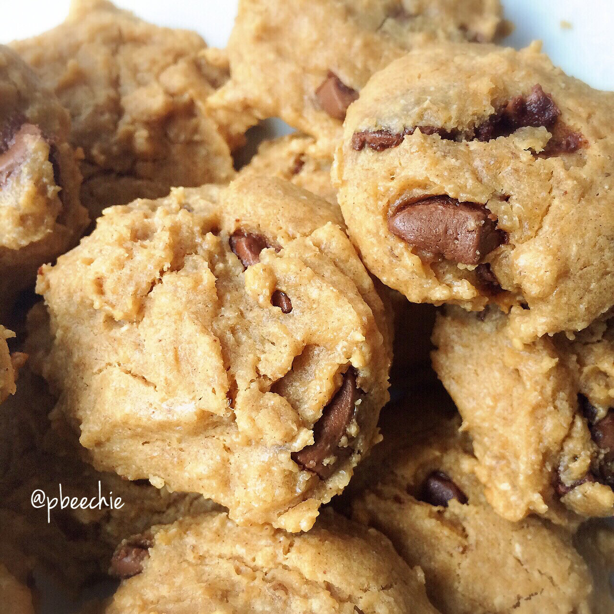

Peanut Butter Chocolate Chip Soft Batch Cookies

Ahh, yes. The familiar, mountainous chocolate peaks of mount cookie, where protein is vast and sugar is scant. Come. Gaze upon the peaks with me. Healthy baking is fun. Just an itta bitta bit of what I baked today for da friendsss on Monday. Peanut butter chocolate chip soft batch cookies.
I sent out two packages of goodies and also brought some for coworkers because they know I love to bake but I never bring them stuff XD I'm always afraid they won't like the healthy baking. But they do! Then I sent a package to a friend I met on Instagram; we did a baking exchange! And I sent a package to Jenna Marbles & Julien because I'm a fangirl; basically they are me. The total personality of Jenna blended with the athleticism of Julien = me. I know that they're trying to be more on point with their food with the New Year so I sent some goodiesssss :) for always making me laugh. Julien has Celiac Disease (he can't have gluten) & Jenna tries to eat vegan, so it was a bit difficult to match both of those needs. I managed to make everything gluten free, but considering almost everything I bake has whey protein, it isn't vegan :[ Hoping they love it though because their "frozen banana" for dessert makes me sad & bored for them XD Healthy desserts can be more fun than that!! Anyways. These are gluten free. It's a spin on one of Nicolette's recipes that I love to bake for people!!
Peanut Butter Chocolate Chip Soft Batch Cookies
Inspired by: Milk Chocolate Chunk Cashew Cookies
-
2 egg whites
-
1/3 cup all natural peanut butter
-
1/2 cup gluten free oat flour (ground up raw oats)
-
1/3 cup almond meal
-
1/2 scoop vanilla whey protein powder
-
2 TBSP baking stevia
-
1/2 tsp baking powder
-
1/4 cup sugar free chocolate chips
Mix all of your ingredients in a bowl! Once evenly mixed, get a TBSP or mini ice cream scoop; I use a TBSP because the first time I used an ice cream scoop, the batter broke it hahaha. So take about 1 TBSP of the batter and place it on a baking sheet that's been sprayed with nonstick spray. Repeat this process until 16 cookies are formed! Bake at 350 F for 8-10 minutes. Let cool then eat :)